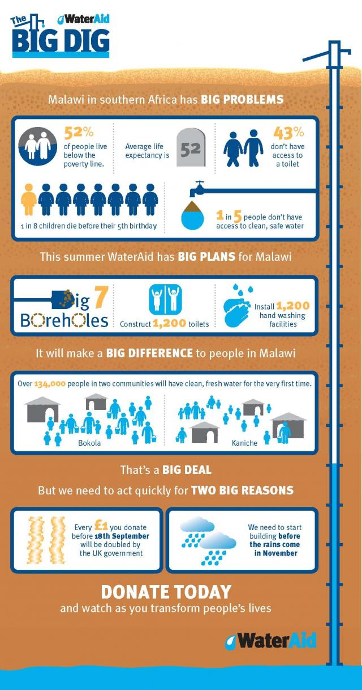
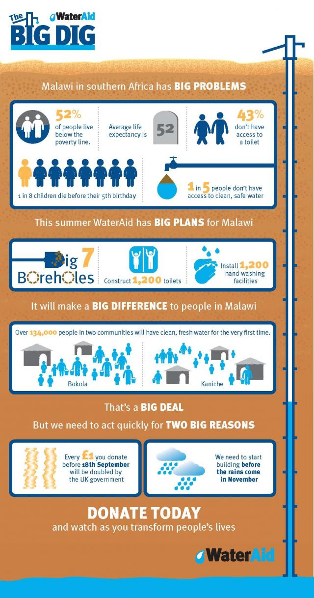

WaterAid: A grande escavação
11 de Junho de 2018 às 06:00
Ponto de vista da SOFII
Um exemplo muito bom de como a narrativa, feita corretamente, pode mudar o mundo. O infográfico não é ótimo? (imagem abaixo) Esta campanha é divertida, inovadora, envolvente, emocional (imagine como você se sentiria sem nenhum banheiro...) e altamente eficaz como, inevitavelmente, a verdadeira narrativa em tempo real deve ser. No geral, brilhante.
Área de atuação
Meio ambiente
Meio de comunicação
Online
Público alvo
Campanha capital
País de origem
Reino Unido
Resumo / objetivos
Esta campanha de captação de recursos e sensibilização teve como objetivo arrecadar 1,2 milhões de libras esterlinas e levar água limpa a mais de 170 mil pessoas no Malawi, graças ao apoio de matching (dobrar a doação) do governo britânico. No final, arrecadou-se o dobro da meta e revolucionou a forma como o WaterAid se conectou com seus doadores e beneficiários.
Histórico
O Big Dig foi uma nova abordagem na narrativa do terceiro setor. Os canais online, como blogs e Instagram, aproximaram doadores de duas comunidades no Malawi. Os doadores podiam acompanhar o Big Dig dia a dia - inclusive quando o poço foi cavado e a água limpa chegou para grande felicidade.
Características especiais
O Big Dig foi precursor no Terceiro Setor do Reino Unido - o digital nunca tinha sido combinado com canais existentes, como a mala direta, dessa forma, trazendo os doadores muito mais perto das pessoas que ajudam, melhorando a experiência, aprofundando relacionamentos e engajamento. Os meios digitais foram um canal contínuo de narração onde o WaterAid testou as ferramentas de engajamento usando uma estratégia de plataforma proprietária. Permitiu que a organização contasse histórias pessoais, autênticas e reais diretamente da fonte. A equipe local foi treinada em mídias sociais usando o Instagram - uma mudança estratégica na forma como as organizações sociais se conectam com as comunidades e contam histórias a época.
Influência / impacto
O inovador uso de postagens móveis em blogs direto do Malawi significava que os doadores do WaterAid podiam ver seu apoio em ação e conhecer as pessoas que estavam ajudando em tempo real.
Eles podiam encontrar pessoas cujos filhos estavam morrendo por falta de água limpa. Eles poderiam se juntar com eles para mudar essa situação, observando com eles enquanto um caminhão perfurava o poço e a água limpa veio mudar a vida de todos para sempre. Além de dar às pessoas uma razão para doar, deu-lhes um motivo para compartilhar e se aproximar da WaterAid, fornecendo dados de e-mail e dispositivos móveis.
Resultados
O Big Dig foi a campanha de captação e conscientização mais bem sucedida da WaterAid durante anos. Esta campanha integrada reuniu equipes de captação, comunicação e parcerias para arrecadar £2,589,984 (incluindo o matching governamental) contra a meta de 1,2 milhões e levar água limpa, segura e saneamento a mais de 170 mil pessoas no Malawi. Os canais digitais, incluindo o blog Big Dig, arrecadaram £75,000 diretamente, mas também impulsionaram o engajamento e o alcance para aumentar o resultado geral. O Big Dig alcançou mais de 1.500.000 contas do Twitter. Mais de 350 imagens foram postadas no Instagram. O conteúdo do Facebook e do Twitter do WaterAid teve a maior interação de todos os tempos.
Méritos
É simples, o Big Dig nunca será esquecido pelos funcionários e doadores do WaterAid e pelas pessoas no Malawi que viram suas vidas mudarem e compartilharam com todo o mundo.

Um exemplo muito bom de como a narrativa, feita corretamente, pode mudar o mundo. O infográfico não é ótimo? (imagem abaixo) Esta campanha é divertida, inovadora, envolvente, emocional (imagine como você se sentiria sem nenhum banheiro...) e altamente eficaz como, inevitavelmente, a verdadeira narrativa em tempo real deve ser. No geral, brilhante.
Área de atuação
Meio ambiente
Meio de comunicação
Online
Público alvo
Campanha capital
País de origem
Reino Unido
Resumo / objetivos
Esta campanha de captação de recursos e sensibilização teve como objetivo arrecadar 1,2 milhões de libras esterlinas e levar água limpa a mais de 170 mil pessoas no Malawi, graças ao apoio de matching (dobrar a doação) do governo britânico. No final, arrecadou-se o dobro da meta e revolucionou a forma como o WaterAid se conectou com seus doadores e beneficiários.
Histórico
O Big Dig foi uma nova abordagem na narrativa do terceiro setor. Os canais online, como blogs e Instagram, aproximaram doadores de duas comunidades no Malawi. Os doadores podiam acompanhar o Big Dig dia a dia - inclusive quando o poço foi cavado e a água limpa chegou para grande felicidade.
Características especiais
O Big Dig foi precursor no Terceiro Setor do Reino Unido - o digital nunca tinha sido combinado com canais existentes, como a mala direta, dessa forma, trazendo os doadores muito mais perto das pessoas que ajudam, melhorando a experiência, aprofundando relacionamentos e engajamento. Os meios digitais foram um canal contínuo de narração onde o WaterAid testou as ferramentas de engajamento usando uma estratégia de plataforma proprietária. Permitiu que a organização contasse histórias pessoais, autênticas e reais diretamente da fonte. A equipe local foi treinada em mídias sociais usando o Instagram - uma mudança estratégica na forma como as organizações sociais se conectam com as comunidades e contam histórias a época.
Influência / impacto
O inovador uso de postagens móveis em blogs direto do Malawi significava que os doadores do WaterAid podiam ver seu apoio em ação e conhecer as pessoas que estavam ajudando em tempo real.
Eles podiam encontrar pessoas cujos filhos estavam morrendo por falta de água limpa. Eles poderiam se juntar com eles para mudar essa situação, observando com eles enquanto um caminhão perfurava o poço e a água limpa veio mudar a vida de todos para sempre. Além de dar às pessoas uma razão para doar, deu-lhes um motivo para compartilhar e se aproximar da WaterAid, fornecendo dados de e-mail e dispositivos móveis.
Resultados
O Big Dig foi a campanha de captação e conscientização mais bem sucedida da WaterAid durante anos. Esta campanha integrada reuniu equipes de captação, comunicação e parcerias para arrecadar £2,589,984 (incluindo o matching governamental) contra a meta de 1,2 milhões e levar água limpa, segura e saneamento a mais de 170 mil pessoas no Malawi. Os canais digitais, incluindo o blog Big Dig, arrecadaram £75,000 diretamente, mas também impulsionaram o engajamento e o alcance para aumentar o resultado geral. O Big Dig alcançou mais de 1.500.000 contas do Twitter. Mais de 350 imagens foram postadas no Instagram. O conteúdo do Facebook e do Twitter do WaterAid teve a maior interação de todos os tempos.
Méritos
É simples, o Big Dig nunca será esquecido pelos funcionários e doadores do WaterAid e pelas pessoas no Malawi que viram suas vidas mudarem e compartilharam com todo o mundo.

Notícias mais populares
Gestão
Em agosto de 2017, a revista ÉPOCA e o Instituto Doar divulgaram a primeira ediç&...
Contexto e tendências
Criado para tornar mais transparentes as parcerias entre a administração públic...
Profissional captador
A captação de recursos é fundamental para a sustentabilidade de uma organiza&cc...